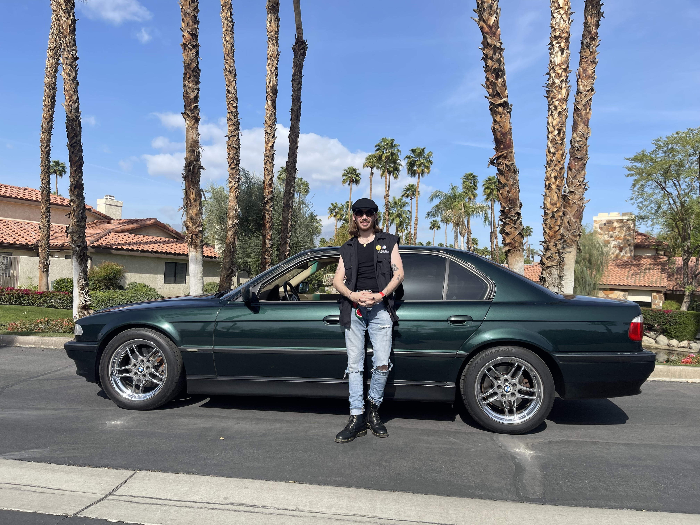

The Blog
NEAR THE END!!(oftheyear)
December 15, 2025
Good golly, where do I ever begin. I am streaming live right now in order to hit a few birds with one stone as they say, YIKES! I have never really streamed myself working on my website like this but why not. I started with one of the songs I am working on and it kept lagging out, very annoying. So here we are keeping up with the little overbearing tasks. I always procrastinate this part of the job. Clovermind Music has alot of plans for 2026. More Music is coming in hot thats for sure, whatelse? Oh I want to write a book, maybe a guitar manual for Wizards? Soundcloud dropped a Vinyl feature so I put together all the singles I have released so far and compiled them with some basic artwork. I thought I could update it on the fly but apparantly not. I am tempted to withdraw it and see if I can correct some issues.
WINTER ❄️
December 01, 2025
OKAY that was fast, I did not expect winter to catch me like that. Novemeber went by in a blink. I grew out my beard fo da lads Mental Health and all but honestly I dont look any different to my usual look. Reorganizing my music library was probably the best decision I made. I mean really got in deep. Made a spreadsheet of vinyl I own and my digital purchases. My old mac was full of all my CDS that I got through the years which was alot of rock/metal and Prince of course. thankfully I am able to transfer and sync most of it. Maybe 100GB or so from 2012 to 2020. Got an Air in 2021 and been staying on top of my files since then. This led me into reshaping my personal website. I didnt wanna toss the Terminal so I granted acces through a Projects page which has all my games apps and synths I have made over the years. I have noticed that I have accumulated alot over the years. Software and Hardware alike, my girlfriend always gets me something music related for my bday and christmas and any other gift related holiday tbh.
Spooky Season 🎃
September 29, 2025
Spooky Vibes for the next month. Oh boy do I love spooky season yes I do!. I have over 200 movies on a spreadsheet just for this time of the year so that I can watch all my favourites.YIKES! Spetember is a busy one for me, full of birthdays and anniversaries. I went to Portola this year and wow it did not disappoint at all. Underworld and LCD Soundsystem like what? LIVE ? What! How cool and fitting for the BAY AREA. I love going up to Sn Francisco. San Francisco wheres your disco, lol did I mention Dom Dolla again. Dom never fails to bring the vibes. We saw Jazzy but they did a B2B with Kilamanjaro and it was good but I wanted to hear Jazzys Stuff more lol. Kettama B2B with Prospa was good tho, Im looking forward to his album now in October. I really am falling more in love with electronic music culture. Vastly different to the Trad/Rock culture I grew up with, the punk side always crosses into other genres/cultures which stangely links us together, the metal to techno pipeline. Excited to settle down for the fall/winter. Beatober around the corner so I gotta get prepared too. Oh I also have been practicing my DJ skills so here's a link to a Funky Disco House mix. Slán for now!
🔥HEATWAVE🔥
August 29, 2025
Alright, so its fricking hot right now! Like a 100 degrees easy. I have been busy af, went to a few Dj nights and more concerts/festivals. I am still feeling hella inspired since HARD Summer! What a VIBE! Since then I have made a couple of tunes and starting to get back into the swing of things. Recently I have been dabbling in Live DJ Streaming. Obviously I am still a learner but I am not afriad to make content in the meantime. The biggest thing so far is purchasing music so that way when I do not have internet I can still practice. It is expensive but it does make everything more standalone/ready to go. I figured out how to get a USB prepared properly and that was tricky. When I plugged it in to a Pioneer DJ stand alone controller it brought up my folders perfectly. I was chuffed it worked and now I just need to play a set somewhere. A step up I suppose from friends parties and hanging out at the beach. I do get bored quick if I practice too much, its not like practing as an acoustic player or a band rehearsal. Time will tell because when I am vibing I am vibing LOL! The Heat has really kicked in full effect now so Il be able to squeeze so more daylight hours before I spend all my time working on beatober stuff. I gotta start planning that soon too. Busy line up for Septemeber Portola on the list. I got alot of work to do on Clovermind Music. After attending one of the Flowmie meet ups that also have DJs I decided to throw my own event. I was thinking just Orange County maybe and host it in Fullerton but now I'm thinking have it somewhere else, maybe Anaheim or Santa Ana. The best place to start would be at a Park maybe 6-9pm. Lots of ideas brewing.
Feeling the HEAT 🔥
July 16, 2025
The time is flying by. I am way behind on video editing but I have still been vlogging my adventures along the way. I have been to a couple of festivals and plenty of gigs. I even started working on my car and made a whole vlog about that too. LORD I am overwhelemed with Video Footage, no memory left in my head or on my laptop. Werk has been WERK! ugh enough of that killing my time, cannot complain overall tho it pays the bills. I got a raise and lil bonus. I also hit my 5 year anniversary in August too. I love Yamaha but I just hate being stuck on the phone. I have so many plans and ideas but trying to produce them all or bring them to some sort of fruition it tough. Musically I still write songs in my head 24/7 but making house tunes is different then sitting down with the guitar, I gotta PICK all the sounds so meticiously to fit the vibe lol. I do love the techy aspect of it tho, nerding out over kicks and snares, picking which midi controller to use. I did re-download Ableton again, why not! ya know. I have been really unmotivated lately, I am sure many people are feeling the same. The world seems to be burning right before our eyes but we do nothing about it at all, like at all. Part of me wants to stock up on solar batteries and toilet paper again. I love that Kneecap are blowing up. I have been watching them promote the teanga for years and also showing solidarity with Palestine too, beautiful. Saoirse don Palestine! California has been home for near 7 years now. Trump is ruining it, literally ruining it so much. Everyone is stressed to the max and we cannot afford nothing. Imagine if California left the USA? WILD thoughts.
SUMMER Anseo! ☀️
June 13, 2025
Y0000 so Summer is here. I love the summer, bring on the heat. It's festival season. Coachella 4 years in a row! Wow saw Kneecap tho that was lit! EDC omg where do I begin. AMAAAZZZIING. Did not expect to love this festival so much. It can be alot if you are not into the music and vibe but wow the EDM community as a whole, wonderful experience. Everything was cyberpunky and trippy and colorful and pretty. It is a proper carnival with rides and games and everything. Loved it, already planning to go next year. It also is held in the motorspeedway which led me to reading/learning about nascar and also relighting my love for cars. My dad loved cars so it was nice to rememeber that shared love. Nascar is wild wont get into that. Runnning the BMW as my own personal car/ eductional project. DJin has been in practice. I have performed casually at a couple of birthday party shin digs for my homies. I also ran a lil karaoke one night too which is always fun. Learnign alot but still fuzzy on making the playlist, always been an improv kinda guy but takes more practice I suppose. Producing more House music with a fresher perspective. Really just wanna make people dance. Gotta find that groove I am always feeling. I drop all my early demos on soundcloud and now theres drama around the AI features. OMG a whole other can of batshit crazy stuff. I gotta really use the Clovermind Music page to discuss the dramas lol. I think for now I will host my own demos and see how it goes. Maybe stick to bandcamp?
MAY THE 4TH BE WITH YOU!
May 6, 2025
Electronic music is a broad universe of sonic exploration, stretching from the meditative textures of ambient to the pounding rhythms of techno. Just like OUTER SPACE. I have always been a space fan and STAR WARS was my favourite; Return of the Jedi was unmatched. Since the 4th fell on a Sunday. I spent the whole weekend playing my Battlefront II on PS5 and watching the original trilogy of movies. I did buy Lego STAR WARS LOL! I actually did stream quite a bit of Battlefront II and Jedi Survivor you can catch those streams on Youtube and Twitch. Thankfully it was a relaxing weekend and it was well needed diving into the world of star wars kinda refresh my innocence and left me quite inspired. Which is my I revampped my website to give it a new vibe, cyberpunky and what not. Next to dive back into producing some music, feeling very inspired and creative so we shall have to wait and see what comes next? Maybe some more DJ sets too. I have been digesting ALOT of new music in a broad sense. Lots of remix ideas too :D Tá ar muin na muice! Revenge of the 6th today XD! Click Here
It's Festival Season!!!
April 28, 2025
I put a few blogs over on the Clovermind Music website and I have plans for some more intresting content to put up soon enough CHECK IT OUT! It's something small regarding the different genres and sub genres in the EDM world. Getting deeper into electronic music world, most of the artists I want to see these days are DJs that sometimes dabble in live performances. I am gonna be playing catch up in May,I have alot of vlog footage to put together aswell so keep eyes on my Youtube! Its been a busy month so far and April marks the start of festival season! Coachella was AWESOME!. It was a hotter weekend then expected but i somehow managed to power through with no trouble. Kneecap kicked ass and T-Pain blew me away. I saw a bit of everything which was pretty goooood. IONTACH! Go Iontach! EDC is next on the list and I will be fully in it with DJs everywhere, I almost dont know who to see first casuse the line up is so packed. It's gonna be my first time at EDC so Tá sceitimíní orm. OH! I nearly forgot to mention I got a car! A 2000 BMW 740i in Green to be exact! I am actually in disbelief. It's been a long time since I had my own set of wheels out here in the big bad Los Angeles
New Year, New Toy.
Feburary 15, 2025
I got a new toy for my birthday which was in January btw!. A DDJ-FLX4 an awesome little DJ controller that actually can do so much! At first I was skeptical, I thought I needed a DJ controller with more gizmos, gadgets and controls in order to do what I actually wanteded in terms of remixes. Nope this lil guy is perfect and budget friendly. I would recommend visiting DJ Carlo's YT channel as he has an interesting video about using the STEMS feature with the FLX4. It requires you to download a Midi file and update Recordbox so that way the lil pads respond properly. Once I got this set up, I was hooked! I love how portable this controller is too considering I ALWAYS have my laptop with me. I took it down to the beach becasue that is the obvious goal! To be a summer beach house DJ and perform in awesome locations around the globe. For now I will take it to all my local beachs here in Orange County and probably a couple of parks too. I challeneged myself to learn as much as I could in two weeks and then find a gig. No gigs yet but I have plans to do a couple of live streams and see how it goes.
Mo Cairde i Venice :)
July 15, 2024


A leithéid de dheireadh seachtaine imeachtaí. Bhí mo chara Matt i Venice Beach le na chailín Emelee. Tá siad ina gcónaí i Vancouver agus shocraigh siad deireadh seachtaine a chaitheamh i Los Angeles. Deir siad nach bhfuil an eitilt ró-fhada, mar sin caithfidh mé cuairt a thabhairt orthu am éigin freisin. Bhí Alex i San Francisco don deireadh seachtaine ag freastal ar 21ú breithlá a nia. Tá an páiste fásta anois ina teaghlach. Bhí brón orm nach raibh mé in ann freastal ar an mbreithlá ach bhí sceitimíní orm freisin mo chara is fearr a fheiceáil, bhí 7 mbliana ann ó bhíomar le chéile go deireanach. Ar maidin Dé Sathairn, líon mé an umar gáis sa Subaru agus chuaigh mé as Fullerton go Venice Beach. Bheadh sé ina thuras uair an chloig ag brath ar thrácht. Ar an lámh eile, bhí a fhios agam go mbeadh sé deacair páirceáil a fháil.Tá rian curtha isteach agam don dúshlán GHOSTWAVE le Taetro agus níor chruthaigh mé ceol ó shin, ach tá mé ag obair go dian ar an teicneolaíocht ceoil agus ag baint taitnimh as mo shamhradh ar an trá.